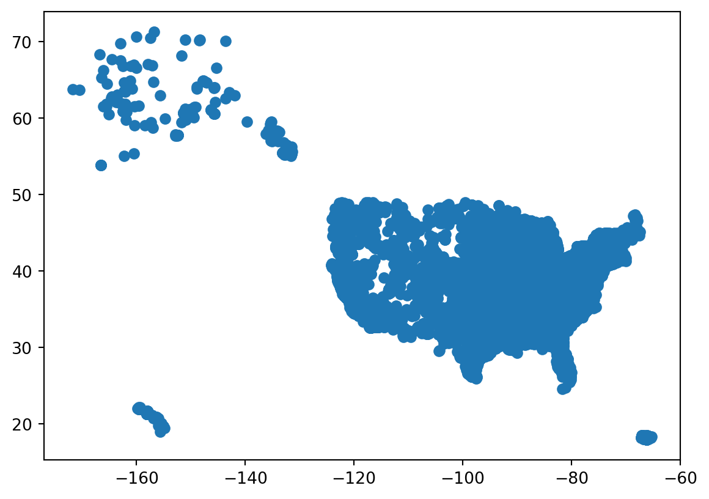
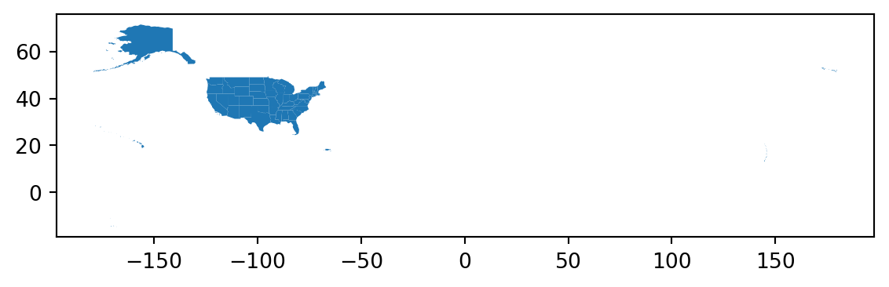
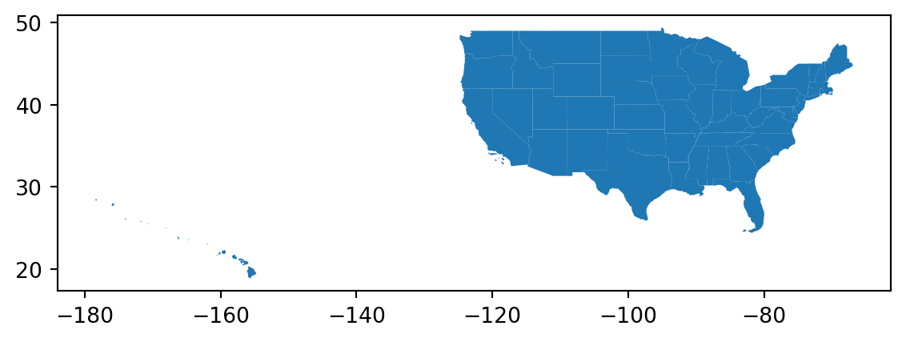
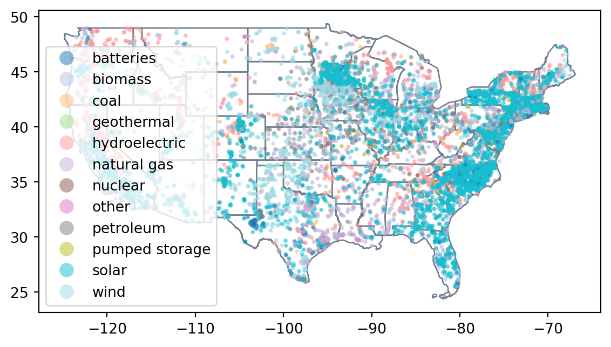
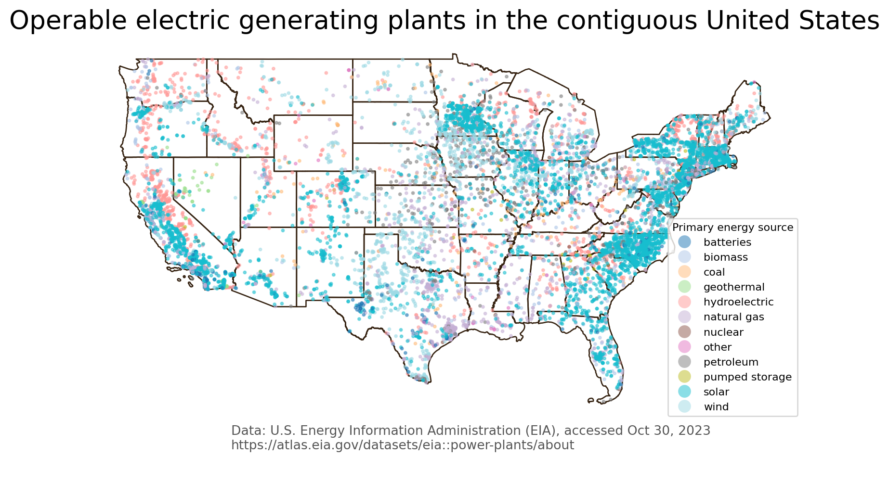

import geopandas as gpd
import pandas as pd
import matplotlib.pyplot as plt14 cvs to GeoDataFrame
In this lesson we will learn how to make a csv into a geopandas.GeoDataFrame, setting its CRS manually and learn some more customizations for maps and matplotlib figures.
14.1 Data
We will use two datasets in this lesson. The first one is a reprojection of this dataset from the U.S. Energy Information Administration (EIA) with information about operable electric generating plants in the United States by energy source, as of May 2023.
Follow these steps to download the reprojected datset for this lesson:
- Go to https://github.com/carmengg/eds-220-book/blob/main/data/power_plants_epsg4269.csv
- Download the raw file and move it into your working directory
You can access the metadata for this dataset here.
The second dataset is a TIGER shapefile from the United States Census Bureau. TIGER stands for Topologically Integrated Geographic Encoding and Referencing. This used to be the data format the US Census distributed geospatial data, but since 2008 TIGER files are converted to shapefiles. We will use the shapefiles for the US states. Follow these steps to download shapefile with the United States’ states:
- At the bottom of the 2022 page, under Download, click on “Web Interface”
- For year, select 2022, and for layer type select “States (and equivalent)”. Click submit.
- Click on “Download national file”.
You can check the metadata for all the TIGER shapefiles here. The columns for this shapefile are:

File management: Both datasets must be in a data directory inside your working directory.
14.2 DataFrame to GeoDataFrame
Let’s start by importing the necessary libraries:
And update pandas display options:
# display all column when looking at dataframes
pd.set_option("display.max.columns", None)Our first step is to import the power plants dataset. Notice this is a csv, geopandas doesn’t have a way to extract a geometry column from a csv, so we will need to create this geometry manually. We start by reading in the data using pandas.
# import power plants data
power_plants = pd.read_csv('data/power_plants_epsg4269.csv')
power_plants.head(3)| Unnamed: 0 | objectid | plant_code | plant_name | utility_id | utility_name | sector_name | street_address | city | county | state | zip | primsource | source_desc | tech_desc | install_mw | total_mw | bat_mw | bio_mw | coal_mw | geo_mw | hydro_mw | hydrops_mw | ng_mw | nuclear_mw | crude_mw | solar_mw | wind_mw | other_mw | source | period | longitude | latitude | |
|---|---|---|---|---|---|---|---|---|---|---|---|---|---|---|---|---|---|---|---|---|---|---|---|---|---|---|---|---|---|---|---|---|---|
| 0 | 0.0 | 11570 | 1 | Sand Point | 63560 | TDX Sand Point Generating, LLC | Electric Utility | 100 Power Plant Way | Sand Point | Aleutians East | Alaska | 99661.0 | petroleum | Petroleum = 1.3 MW, Wind = 0.4 MW | Petroleum Liquids; Onshore Wind Turbine; | 3.7 | 1.7 | NaN | NaN | NaN | NaN | NaN | NaN | NaN | NaN | 1.3 | NaN | 0.4 | NaN | EIA-860, EIA-860M and EIA-923 | 202305.0 | -160.497222 | 55.339722 |
| 1 | 1.0 | 11571 | 2 | Bankhead Dam | 195 | Alabama Power Co | Electric Utility | 19001 Lock 17 Road | Northport | Tuscaloosa | Alabama | 35476.0 | hydroelectric | Hydroelectric = 53 MW | Conventional Hydroelectric | 53.9 | 53.0 | NaN | NaN | NaN | NaN | 53.0 | NaN | NaN | NaN | NaN | NaN | NaN | NaN | EIA-860, EIA-860M and EIA-923 | 202305.0 | -87.356823 | 33.458665 |
| 2 | 2.0 | 11572 | 3 | Barry | 195 | Alabama Power Co | Electric Utility | North Highway 43 | Bucks | Mobile | Alabama | 36512.0 | natural gas | Coal = 1118.5 MW, Natural Gas = 1296.2 MW | Conventional Steam Coal; Natural Gas Fired Com... | 2569.5 | 2414.7 | NaN | NaN | 1118.5 | NaN | NaN | NaN | 1296.2 | NaN | NaN | NaN | NaN | NaN | EIA-860, EIA-860M and EIA-923 | 202305.0 | -88.010300 | 31.006900 |
# update column names to small caps
power_plants.columns = power_plants.columns.str.lower()This csv has longitude and latitude columns, which indicate the location of the power plants in the NAD83 CRS (EPSG:4269). We use this information to create a new gpd.GeoDataFrame from the pd.DataFrame using the GeoPandas function points_from_xy() like this:
power_plants = gpd.GeoDataFrame(power_plants, # data
# specify geometry column
geometry=gpd.points_from_xy(power_plants.longitude,
power_plants.latitude),
# specify CRS
crs='EPSG:4326'
)Check we now have a geometry column:
power_plants.head(3)| unnamed: 0 | objectid | plant_code | plant_name | utility_id | utility_name | sector_name | street_address | city | county | state | zip | primsource | source_desc | tech_desc | install_mw | total_mw | bat_mw | bio_mw | coal_mw | geo_mw | hydro_mw | hydrops_mw | ng_mw | nuclear_mw | crude_mw | solar_mw | wind_mw | other_mw | source | period | longitude | latitude | geometry | |
|---|---|---|---|---|---|---|---|---|---|---|---|---|---|---|---|---|---|---|---|---|---|---|---|---|---|---|---|---|---|---|---|---|---|---|
| 0 | 0.0 | 11570 | 1 | Sand Point | 63560 | TDX Sand Point Generating, LLC | Electric Utility | 100 Power Plant Way | Sand Point | Aleutians East | Alaska | 99661.0 | petroleum | Petroleum = 1.3 MW, Wind = 0.4 MW | Petroleum Liquids; Onshore Wind Turbine; | 3.7 | 1.7 | NaN | NaN | NaN | NaN | NaN | NaN | NaN | NaN | 1.3 | NaN | 0.4 | NaN | EIA-860, EIA-860M and EIA-923 | 202305.0 | -160.497222 | 55.339722 | POINT (-160.49722 55.33972) |
| 1 | 1.0 | 11571 | 2 | Bankhead Dam | 195 | Alabama Power Co | Electric Utility | 19001 Lock 17 Road | Northport | Tuscaloosa | Alabama | 35476.0 | hydroelectric | Hydroelectric = 53 MW | Conventional Hydroelectric | 53.9 | 53.0 | NaN | NaN | NaN | NaN | 53.0 | NaN | NaN | NaN | NaN | NaN | NaN | NaN | EIA-860, EIA-860M and EIA-923 | 202305.0 | -87.356823 | 33.458665 | POINT (-87.35682 33.45867) |
| 2 | 2.0 | 11572 | 3 | Barry | 195 | Alabama Power Co | Electric Utility | North Highway 43 | Bucks | Mobile | Alabama | 36512.0 | natural gas | Coal = 1118.5 MW, Natural Gas = 1296.2 MW | Conventional Steam Coal; Natural Gas Fired Com... | 2569.5 | 2414.7 | NaN | NaN | 1118.5 | NaN | NaN | NaN | 1296.2 | NaN | NaN | NaN | NaN | NaN | EIA-860, EIA-860M and EIA-923 | 202305.0 | -88.010300 | 31.006900 | POINT (-88.01030 31.00690) |
Let’s see some information about the CRS of our power plants dataset:
# print information about the
print('is geographic?: ', power_plants.crs.is_geographic)
print('is projected?: ', power_plants.crs.is_projected)
print('datum: ', power_plants.crs.datum)
print('ellipsoid: ', power_plants.crs.ellipsoid)
power_plants.crsis geographic?: True
is projected?: False
datum: World Geodetic System 1984 ensemble
ellipsoid: WGS 84<Geographic 2D CRS: EPSG:4326>
Name: WGS 84
Axis Info [ellipsoidal]:
- Lat[north]: Geodetic latitude (degree)
- Lon[east]: Geodetic longitude (degree)
Area of Use:
- name: World.
- bounds: (-180.0, -90.0, 180.0, 90.0)
Datum: World Geodetic System 1984 ensemble
- Ellipsoid: WGS 84
- Prime Meridian: GreenwichNow that we have a geometry column and a CRS, we can plot our dataset:
power_plants.plot()<AxesSubplot:>
14.3 TIGER shapefile
Next, we import the TIGER shapefile:
# read-in data
states = gpd.read_file('data/tl_2022_us_state/tl_2022_us_state.shp')
# update column names to small caps
states.columns = states.columns.str.lower()
states.head()| region | division | statefp | statens | geoid | stusps | name | lsad | mtfcc | funcstat | aland | awater | intptlat | intptlon | geometry | |
|---|---|---|---|---|---|---|---|---|---|---|---|---|---|---|---|
| 0 | 3 | 5 | 54 | 01779805 | 54 | WV | West Virginia | 00 | G4000 | A | 62266456923 | 489045863 | +38.6472854 | -080.6183274 | POLYGON ((-77.75438 39.33346, -77.75422 39.333... |
| 1 | 3 | 5 | 12 | 00294478 | 12 | FL | Florida | 00 | G4000 | A | 138962819934 | 45971472526 | +28.3989775 | -082.5143005 | MULTIPOLYGON (((-83.10874 24.62949, -83.10711 ... |
| 2 | 2 | 3 | 17 | 01779784 | 17 | IL | Illinois | 00 | G4000 | A | 143778515726 | 6216539665 | +40.1028754 | -089.1526108 | POLYGON ((-87.89243 38.28285, -87.89334 38.282... |
| 3 | 2 | 4 | 27 | 00662849 | 27 | MN | Minnesota | 00 | G4000 | A | 206244837557 | 18937184315 | +46.3159573 | -094.1996043 | POLYGON ((-95.31989 48.99892, -95.31747 48.998... |
| 4 | 3 | 5 | 24 | 01714934 | 24 | MD | Maryland | 00 | G4000 | A | 25151771744 | 6979295311 | +38.9466584 | -076.6744939 | POLYGON ((-75.75600 39.24607, -75.75579 39.243... |
Let’s see some information about the CRS of our states geodataframe:
# print information about the CRS
states.crs<Geographic 2D CRS: EPSG:4269>
Name: NAD83
Axis Info [ellipsoidal]:
- Lat[north]: Geodetic latitude (degree)
- Lon[east]: Geodetic longitude (degree)
Area of Use:
- name: North America - onshore and offshore: Canada - Alberta; British Columbia; Manitoba; New Brunswick; Newfoundland and Labrador; Northwest Territories; Nova Scotia; Nunavut; Ontario; Prince Edward Island; Quebec; Saskatchewan; Yukon. Puerto Rico. United States (USA) - Alabama; Alaska; Arizona; Arkansas; California; Colorado; Connecticut; Delaware; Florida; Georgia; Hawaii; Idaho; Illinois; Indiana; Iowa; Kansas; Kentucky; Louisiana; Maine; Maryland; Massachusetts; Michigan; Minnesota; Mississippi; Missouri; Montana; Nebraska; Nevada; New Hampshire; New Jersey; New Mexico; New York; North Carolina; North Dakota; Ohio; Oklahoma; Oregon; Pennsylvania; Rhode Island; South Carolina; South Dakota; Tennessee; Texas; Utah; Vermont; Virginia; Washington; West Virginia; Wisconsin; Wyoming. US Virgin Islands. British Virgin Islands.
- bounds: (167.65, 14.92, -47.74, 86.46)
Datum: North American Datum 1983
- Ellipsoid: GRS 1980
- Prime Meridian: GreenwichAnd plot it:
states.plot()<AxesSubplot:>
Notice the map covers a big extension, this is because, according to the TIGER shapefiles metadata:
In addition to the fifty states, the Census Bureau treats the District of Columbia, Puerto Rico, and the Island areas (American Samoa, the Commonwealth of the Northern Mariana Islands, Guam, and the U.S. Virgin Islands) as statistical equivalents of states for the purpose of data presentation.
In this US Census Bureau file we can see what each code for the region, division, and state corresponds to. These should be numeric codes, so we can start by updating the corresponding columns in the states geo-dataframe:
# notice region, division, and statefp are strings (object) types
states.dtypesregion object
division object
statefp object
statens object
geoid object
stusps object
name object
lsad object
mtfcc object
funcstat object
aland int64
awater int64
intptlat object
intptlon object
geometry geometry
dtype: object # update dtypes of code columns
states.region = states.region.astype('int')
states.division = states.division.astype('int')
states.statefp = states.statefp.astype('int')States corresponds to regions 1 through 4. However, there’s also a region code 9. These rows correspond to non-state regions:
print(states.region.unique())
states[states.region==9][3 2 1 4 9]| region | division | statefp | statens | geoid | stusps | name | lsad | mtfcc | funcstat | aland | awater | intptlat | intptlon | geometry | |
|---|---|---|---|---|---|---|---|---|---|---|---|---|---|---|---|
| 34 | 9 | 0 | 78 | 01802710 | 78 | VI | United States Virgin Islands | 00 | G4000 | A | 348021909 | 1550236187 | +18.3392359 | -064.9500433 | MULTIPOLYGON (((-64.76834 18.26033, -64.77074 ... |
| 35 | 9 | 0 | 69 | 01779809 | 69 | MP | Commonwealth of the Northern Mariana Islands | 00 | G4000 | A | 472292521 | 4644252458 | +15.0010865 | +145.6181702 | MULTIPOLYGON (((145.05897 14.12500, 145.06302 ... |
| 36 | 9 | 0 | 66 | 01802705 | 66 | GU | Guam | 00 | G4000 | A | 543555849 | 934337453 | +13.4417451 | +144.7719021 | POLYGON ((144.56343 13.44806, 144.56357 13.450... |
| 41 | 9 | 0 | 60 | 01802701 | 60 | AS | American Samoa | 00 | G4000 | A | 197759069 | 1307243751 | -14.2671590 | -170.6682674 | MULTIPOLYGON (((-170.53809 -14.33613, -170.548... |
| 49 | 9 | 0 | 72 | 01779808 | 72 | PR | Puerto Rico | 00 | G4000 | A | 8869029522 | 4922249087 | +18.2176480 | -066.4107992 | MULTIPOLYGON (((-66.32322 17.87767, -66.33170 ... |
We can check that Alaska and the non-state regions are causing the long map:
# plot data in states that is not Alaska (code 2) and doesn't have region code 9
states[(states.statefp!=2) & (states.region!=9)].plot()<AxesSubplot:>
14.4 Data selection
For the pupose of this exercise, we want to keep only data for the contiguous states. Let’s overwrite the geo-dataframes accordingly:
states = states[(states.region!=9) & (~states.statefp.isin([2,15]))]
power_plants = power_plants[~power_plants.state.isin(['Puerto Rico','Hawaii','Alaska'])]14.5 Plotting
We can now try plotting both datasets together. To color the power_plants dots according to color we just need
fig, ax = plt.subplots()
# add states
states.plot(ax=ax,
color='none',
edgecolor = 'slategray')
# add electric power plants colored by energy source
power_plants.plot(ax=ax,
column='primsource', # color points according to primsource value
legend=True, # add legend
markersize = 4, # adjust point size
cmap='tab20', # this color map has 20 different colors
alpha=0.5)
plt.show()
And we can finish by adding more information to contextualize our map:
# figsize updates the figure size
fig, ax = plt.subplots(figsize=(10, 6))
# --------------------------
# remove the axis box around the map
ax.axis('off')
# update title
ax.set_title('Operable electric generating plants in the contiguous United States',
fontsize=20)
# annotate the data source
ax.annotate("Data: U.S. Energy Information Administration (EIA), accessed Oct 30, 2023 \nhttps://atlas.eia.gov/datasets/eia::power-plants/about",
xy=(0.25, .06), # position
xycoords='figure fraction',
fontsize=10,
color='#555555')
# --------------------------
# add states
states.plot(ax=ax,
color='none',
edgecolor = '#362312')
# add electric power plants colored by energy source
power_plants.plot(ax=ax,
column='primsource',
legend=True,
markersize = 4,
cmap='tab20',
alpha=0.5,
# adjust legend
legend_kwds={'loc': "lower right",
'title':'Primary energy source',
'title_fontsize':'small',
'fontsize':'small'})<AxesSubplot:title={'center':'Operable electric generating plants in the contiguous United States'}>